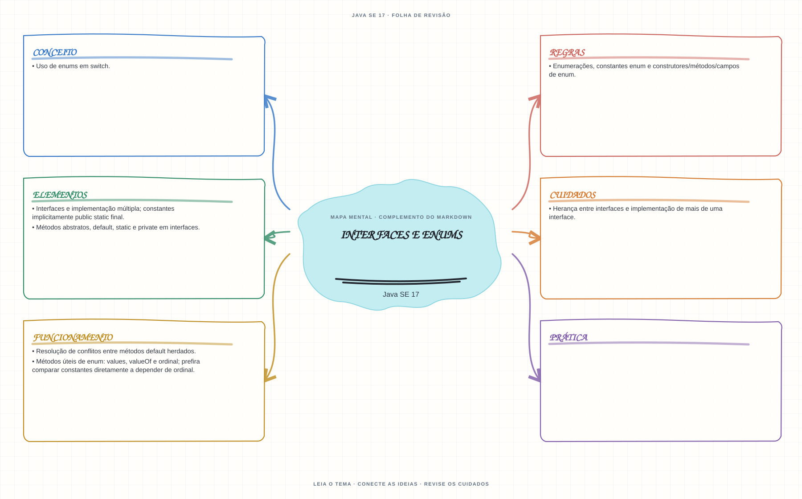

Ver mapa mental deste assuntoAplicar contratos de interfaces, resolver métodos default e usar enums como tipos fechados de constantes.
Primeiro contato: aprenda o conceito e pratique antes de consultar os detalhes de prova. Voltar aos fundamentos se algum termo ainda for novo.
- Leia o objetivo e localize a ideia principal no conteúdo abaixo.
- Preveja o resultado, compile e execute o exemplo.
- Faça a atividade sem copiar a solução e confira a checagem comentada.
EXEMPLO DE CONSOLE
Veja a regra em execução
Antes de executar, anote sua previsão. Compile o exemplo com o JDK e compare a saída observada com as regras deste assunto.
Comandos para compilar e executar
javac -d target/bin src/03-poo/interfaces-e-enums/InterfacesEEnumsExample.java
java -cp target/bin InterfacesEEnumsExampleA execução imprime o resultado no console para você comparar com sua previsão.
Consultar código-fonte: InterfacesEEnumsExample.java
public class InterfacesEEnumsExample {
private interface Saudavel {
default String saudar() {
return "Ola";
}
static String idioma() {
return "portugues";
}
}
private enum Nivel {
INICIANTE(1),
INTERMEDIARIO(2),
AVANCADO(3);
private final int etapa;
Nivel(int etapa) {
this.etapa = etapa;
}
int getEtapa() {
return etapa;
}
}
private static class Estudante implements Saudavel {
}
public static void main(String[] args) {
System.out.println("=== Interfaces e enums ===");
System.out.println("Estudante herda o metodo default da interface Saudavel.");
Estudante estudante = new Estudante();
Nivel nivel = Nivel.INTERMEDIARIO;
System.out.println("Saudacao fornecida pela interface: " + estudante.saudar());
System.out.println("Metodo static da interface: " + Saudavel.idioma());
System.out.println("Enum " + nivel + " armazena a etapa " + nivel.getEtapa() + ".");
System.out.println("values() lista todas as constantes: "
+ java.util.Arrays.toString(Nivel.values()));
}
}
PRATIQUE AGORA
Faça uma pequena alteração por conta própria
Defina um enum para os estados de uma tarefa e use switch para imprimir uma mensagem para cada estado.
Concluído quando: o programa compilar, produzir o resultado esperado e você conseguir explicar a regra aplicada.
CHECAGEM RÁPIDA · Interfaces e enums
O que a classe deve fazer quando duas interfaces implementadas fornecem o mesmo método default?
Conferir resposta comentada
Fornecer uma implementação explícita que resolva o conflito, podendo delegar a uma das interfaces com Interface.super.metodo().
Estude
- Interfaces e implementação múltipla; constantes implicitamente
public static final. - Métodos abstratos,
default,staticeprivateem interfaces. - Resolução de conflitos entre métodos
defaultherdados. - Herança entre interfaces e implementação de mais de uma interface.
- Enumerações, constantes enum e construtores/métodos/campos de enum.
- Métodos úteis de enum:
values,valueOfeordinal; prefira comparar constantes diretamente a depender deordinal. - Uso de enums em
switch.
Prática
Implemente duas interfaces com métodos default de mesmo nome e resolva explicitamente o conflito na classe.
Como este capítulo se relaciona com cada exame
POO básica é reaproveitável; records e sealed não existem em Java 8.
Base de estudo deste portal; confirme o mapeamento com o blueprint vigente.
Conceitos úteis; revise recursos de linguagem e regras de Java 21.
Orientação editorial sobre reaproveitamento do material; não representa objetivos oficiais nem garante cobertura do exame. Consulte o comparativo e as fontes da Oracle.